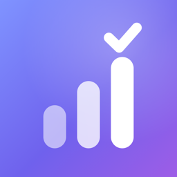

Privacy Policy
Daysmith for iPhone
Last updated: October 8, 2026
Daysmith is a planner app for iPhone made by Derek Zak ("we"). This policy explains what happens to your information when you use Daysmith.
The short version
Daysmith does not collect, store, sell or share any of your personal data. There is no account, no analytics, no advertising and no tracking. Everything you create stays on your iPhone.
Information stored on your device
Your tasks, lists, habits, focus sessions, daily notes and settings are stored only on your device, in the app's private storage (shared with Daysmith's own widgets). We never receive a copy. You can export it (Settings → Export data) or permanently delete it (Settings → Delete all data) at any time. Deleting the app also deletes this data.
Calendar
If you allow calendar access, Daysmith reads events from the calendars on your iPhone to show them on your timeline and plan around them. If you turn on "Write time blocks to calendar", Daysmith adds your planned blocks to a "Daysmith" calendar. Calendar data is processed only on your device and is never sent to us.
Notifications
Reminders and focus alerts are scheduled locally on your device. Daysmith does not use push notifications or a notification server.
Apple Intelligence
Optional AI features (turning a brain dump into tasks, the evening summary) use Apple's on-device Foundation Models. Your text is processed on your iPhone and is not sent to us.
Purchases
Subscriptions and purchases are handled by Apple through the App Store. We do not receive your payment details. Apple's privacy policy applies to those transactions.
Siri, Shortcuts and widgets
When you use Siri, Shortcuts or widgets with Daysmith, the request is handled by iOS and Daysmith on your device. Apple's privacy policy applies to Siri.
Children
Daysmith is suitable for all ages and does not knowingly collect information from anyone.
Changes
If this policy changes, we will update this page and the date above.
Contact
Questions? Email zak.support12@gmail.com.